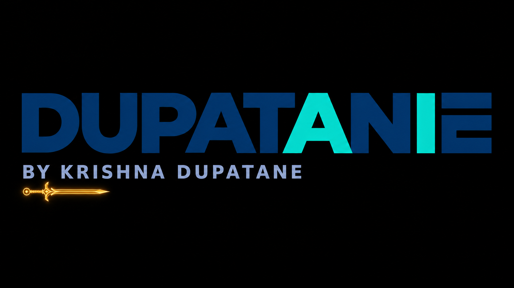

Event-driven scoring
Responses are evaluated as they arrive, with pass/fail state written back to the response sheet.

← Back to hands-on labsGOOGLE WORKSPACE · AUTOMATION
A tested workflow using Google Forms, Sheets, Apps Script, Calendar, Meet and email to score eligibility, invite participants, send reminders and close registration automatically.
Participant submits Form
↓
Response stored in Sheet
↓
Apps Script onFormSubmit
↓
Calculate eligibility score
↙ ↘
Not qualified Qualified
↓ ↓
Result email Add Calendar guest
↓
Qualification email
↓
Scheduled reminder
↓
Registration closesResponses are evaluated as they arrive, with pass/fail state written back to the response sheet.
Qualified participants are added to an existing Calendar event while duplicate invitations are avoided.
Time-driven triggers send reminders and close the registration form at the configured deadline.
The same behavior is mapped to Microsoft Forms, Power Automate, Outlook Calendar and Teams.
Form submission → Sheet entry created → Eligibility calculated → QUALIFIED status written → Qualification email received → Calendar guest added → Meeting invitation received
The fail path is also documented to verify that non-qualified users receive only the result notification and are not invited.